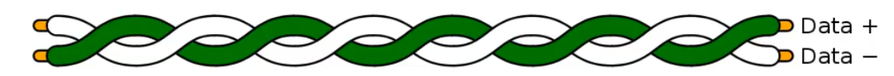
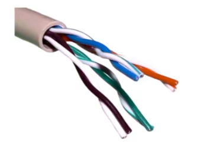
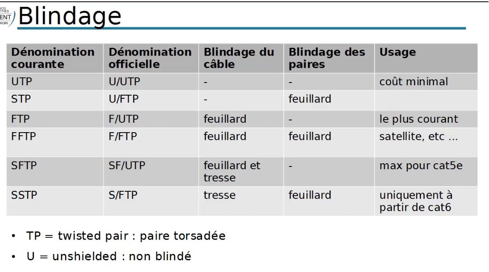
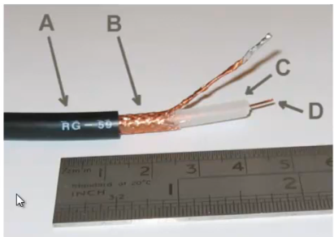
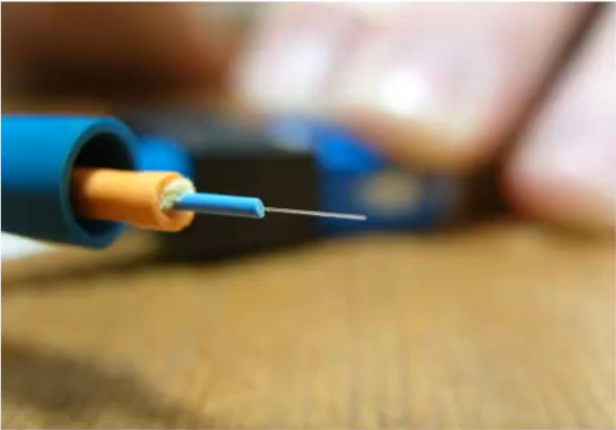

Médias
Plan
• Câbles électriques
• Pertubations
• Protections contre les perturbations
• Paires torsadées
• Catégories obsolères
• Catégories en voie de remplacement
• Catégories actuelles
• Blindage
• Coaxiaux
• Fibre optique
• Sans fil
• CPL
Câbles éléctriques
• ligne de trnsmission
◇ éléments conducteurs métalliques (cuivre le plus souvent)
◇ perrmettant d'acheminer un signal
▪ d'un émetteur vers un récepteur
Pertubations
• Sur une ligne de transmission
◇ les perturbations sont d'origine électromagnétiques
▪ d'origine intérieure ou extérieure
◇ ajoute une tension au signal à transmettre
▪ le transforme
• Ex : signal audio : “friture”
• Dans le cadre d'un signal numérique
◇ changement d'état de certains bits
◇ fausse totalement le message
Protections contre les perturbations
• antiparasitage des sources de parasites
◇ obligation légale pour les constructeurs
• éloigner la ligne de transmission de toute source potenttielle
◇ mico-onde, moteur électrique, etc ...
• chemins de câbles métalliques
◇ cage de Faraday
• blindage des câbles
• transmission différentielle
Paires torsadées
• enroulement en hélice de chaque paire de fils conducteur
◇ diminue la diaphonie
▪ pertubation du signal d'un fil par le champ magnétique du second
◇ en maintenant constante la distance entre les fils
• Chaque paire étant cractérisé par un nombre moyen de torsade par mètre
◇ augmenter le nombre de rosades permettant de diminuer les risques de diaphonie
• Un câble réseau pouvant être composé de plusieurs paires tosadées, il est important de varier leurs nombre moyen de tosades par mètre.
◇ pour éviter toute diaphonie entre les paires

Catégories obsolètes
• Catégorie 1
◇ téléphonie
◇ abandonné au profit de la catégorie 5
• Catégorie 2
◇ anciennment utilisé principalment pour du Token Ring
▪ de faible débit : 4Mbits/s
◇ bande passante : 2Mhz
Catégories en vois de remplacment
• Catégorie 3
◇ 4 paires torsadées
◇ bandes passante : 16 Mhz
◇ utilisé principalement en téléphonie
◇ progressivement remplacé par la catégorie 5
• Catégorie 4
◇ non décrit dans la norme actuelle
◇ 4 paires de cuivre
◇ bande passante : 20 MHz
◇ réseau Token Ring (16Mbps) / 10BASE-T
Catégories actuelles
• Catégorie 5
◇ bande passante 100Mhz
◇ téléphonie au réseaux
▪ Fast Ethernet (100Mbits/s)
◇ remplacé par la cat5e / classe D
▪ e pour enhanced : 125Mhz
• Catégorie 6 / Classe E
◇ 250 Mhz et plus
◇ Cat6a : 500Mhz
▪ 10GBASE-T sur 90 m
• Catégorie 7 / Classe F
◇ 600 Mhz
◇ réseaux et télévision
▪ VHF ou UHF
◇ cat7a 1GHz
▪ jusqu'à 10Gbits/s

Blingage
• limite les interférences
◇ pour chaque paire (autour de chacune)
◇ et/ou l'ensemble du câble
▪ placé alors entre la gaine et les paires
◇ en jouant le rôle de cage de Faraday
▪ acheminement des parasites électriques vers la masse
• types de blindage
◇ F = foil shielding : blindage par feuillard
▪ feuille d'aluminium
- coût modéré
◇ S = braided shielding : blindage par tresse
▪ en cuivre étamé
- protection maximale pour un coût élevé
Blindage

Coaxiaux
• un seul conducteur
◇ simple ou multi-brin
◇ cuivre
◇ dit “âme” du câble
• isolé de son blindage
◇ par un matériaux diélectrique
◇ PVC ou TEFLON
• débit important sur de longues distances
◇ à faible coût
◇ ex : réseau câble urbain
• fragile, instable et vulnérable aux interférences et aux écoutes

• A : gaine extérieure
◇ isolant plastique ou PVC
• B : blindage de cuivre tressé
• C : diélectrique (isolant)
• D : conducteur
Fibre optique
• très haut débit
◇ grâce à des rayons optiques conduits par le “coeur” du câble
▪ entouré d'une gaine et d'une protection
• uni-directionnel
• insensible aux champs électromagnétiques
• 2 types
◇ monomode : 1Gb/s / km
◇ mutlimode : 100 Gn/s / km
Fibre Optique
• Avantages
◇ Légèreté
◇ Immunité au bruit
◇ Faible atténuation
◇ Très haut débit
◇ Quasi impossibilité d'écoute
• principalement utilisé pour
◇ des connections entre répartiteurs
◇ des connections très haut débit
• ne convient pas ua LAN
• Inconvénients
◇ installation complexe
◇ coût élevé

Sans fil (ondes électromagnétiques)
• Ondes radios (entre 9kHz et 300 GHz)
◇ réglementées suivant les régions du monde
◇ communication réseaux limitée à un espace de UHF
▪ ultra haute fréquence - 300MHz à 3GHz
- PAN : Bluetooth, ZigBee, Wireless USB
- LAN : WiFI, HiperLan 1 et 2
- MAN : WiMax, HiperMan, HiperACCESS
- WAN : 3G, 4G, GSK, UMTS, etc ...
• Infra-rouge (300GHz à 100THz
◇ voir IrDA (infrared Data Association) pour le transfert de fichiers
◇ progressivement remplacé par les technologies ) ondes radios
• Champs lumineux visble (spectre optique - 384THz à 789THz)
◇ anecdotique
◇ voir LiFI
CPL
• Courant porteur en Ligne
◇ transmission par réseau électrique
▪ ne nécesite aucun câblage supplémentaure
◇ signal de plus haute fréquence et de faible énergie
▪ superposé au courant électrique alternatif (50 ou 60Hz)
• Deux catégories
◇ haut débit : modutaltions multi-poteuses (type OFDM)
▪ bande de fréquence : de 1,6 à 30Mhz
▪ entre 14 et 500Mbits/s
◇ bas débit : une seule porteuse à la fois en modulation de fréquence
▪ bande de fréquence : entre 9 et 150kHz en Europe
- entre 150 et 450kHz aux États-Unis
▪ principalement pour la domotique
- de 2,4 à 20 kbits/s
• Extrêmement sujet au bruit at aux atténuations
◇ contrés pas un mécnaise de redondance
◇ dépendant de la qualité du câblage électrique, n'étant par definition pas destiné à transmettre des informations
Ce qui à été vu
• Les différents médias de communication réseaux
◇ Filaire
▪ câbles à paires torsadés et câbles coaxiaux
◇ Fibre optique
◇ Sans-fil (ondes électromagnétiques)
◇ CPL